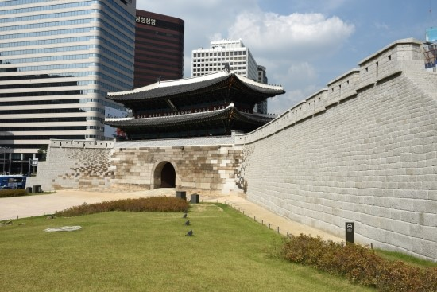

숭례문

- 
숭례문은 서울시 중구 남대문로 4가에 있다. 우리 나라 국보 제1호이다. 태조 이성계 가 수도를 한양으로 옮기고 난
후에 한양 을 보호하기 위해 세운 도성의 8개 성문 중의 하나이다. 숭례문은 성곽 의 남쪽에 세워진 성문으로
남대문이라고도 한다. 8개의 성문 중에서 가장 중요한 역할을 했으며, 성 안으로 들어가는 정문이었다.
1396년(태조 5년)에 만들었으며, 이후 1448년(세종 30년)에 새로 수리하여 세운 것으로 알려져 있다.
1479년(성종 10년)에 숭례문을 다시 한번 크게 수리한 것으로 보인다. 중앙에 아치형의 문 이 있고 큰 돌기단
위에 2층의 누각 으로 되어 있다. 숭례문은 '예의를 잘 지키는 문'이라는 의미가 담겨 있으며, 현재 전하고 있는
우리 나라의 성문 중에서 가장 크기가 크다. 숭례문은 조선 시대의 성문 연구에 귀중한 자료가 되고 있다
숭례문의 생김새 숭례문은 아치형으로 입구를 낸 큰 돌기단을
세우고 그 위에 2층으로 된 누각 이 있는 문이다. 누각은 정면이 5칸, 옆면이 2칸으로 되어 있는 2층집이다.
1, 2층 모두 지붕이 있고, 돌기단 위에는 높이가 약 1.2m 정도 되는 담장을 벽돌로 쌓았다. 그리고 담장의
동쪽과 서쪽에 작은 문을 세웠으며, 누각과 담장 사이의 바닥에는 빙 둘러서 나무판을 깔았다. 누각의 1층 안에는
아치형의 문 바로 위에 해당하는 부분에만 마루를 깔고, 나머지 부분은 흙바닥으로 되어 있으며, 2층은 모두
흙바닥이다. 1층과 2층의 지붕의 추녀 끝에 잇대어 단 네모난 서까래에는 용의 머리나 귀신 머리 모양의 기와를
달고, 각 지붕의 추녀 마루에는 동물 모양과 용머리 모양을 조각한 장식품을 여러 개 올려 놓았다. 숭례문 꼭대기의
용마루 양쪽 끝에는 독수리 머리 모양을 조각한 장식품을 올려 놓았다.
숭례문의 특징 숭례문의 의미와 특징을 살펴보면 다음과 같다. 첫째, 숭례문은 우리 나라 국보
제1호이다. 둘째, 숭례문은 조선 시대 8개의 성문 중에서 제일 남쪽에 세워진 것으로, 남대문이라고도 한다. 셋째,
숭례문은 태조 이성계 가 한양 에 세운 8개의 성문 중 가장 중요한 문으로, 성 안으로 들어가는 정문의 역할을
했다. 넷째, 숭례문은 '예의를 잘 지키고 따르는 문'이라는 뜻을 가지고 있다. 다섯째, 숭례문은 현재 전하고 있는
우리 나라의 성문 중에서 가장 크기가 크다. 여섯째, 숭례문은 아치형으로 입구를 낸 큰 돌기단을 세우고, 그 위에
2층으로 된 누각 을 세워 만들었다.